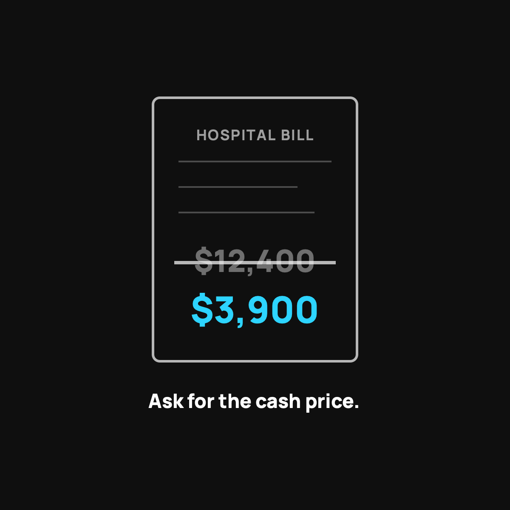

How to Negotiate a Hospital Bill Yourself
The bill is an opening offer, not a verdict. Here's how to knock it down.
A hospital bill is an opening offer, not a fixed price. To negotiate it yourself: ask for the fully itemized bill and check it for errors, ask for the cash or self-pay price, ask for a further discount or financial assistance, and get the final number in writing before you pay a cent. Regular people do this every day and save thousands.

Most people don't know this, so I'll say it plainly. A hospital bill is not a fixed price. It's an opening offer. The number they print is the sticker price, and almost nobody pays it. If you know how to ask, you can knock a shocking amount off, no membership or insurance required. Here's exactly how I'd do it.
First, get the itemized bill
Never negotiate off the summary. Call and ask for the fully itemized bill, the one that lists every charge with a code next to it. This does two things. It slows everything down, and it lets you actually see what you're being charged for.
You will find mistakes. Double-charged items, a test you never got, a "supply" that costs more than your car payment. Billing errors are common, and every wrong line is money back in your pocket.
Ask the magic question: "What's the cash price?"
This is the whole game. Say you're paying out of pocket and ask for the self-pay or cash price. The cash price is often a fraction of the sticker price, because the hospital would rather get paid something now than chase you for months. I wrote more about why this gap even exists.
Do not be shy about it. This is a normal, everyday request for their billing department. You're not asking for a favor. You're asking for the price they give people who pay directly.
Then just ask for a discount
Once you have the cash price, ask if they can do better. Try lines like:
- "That's still more than I can pay at once. What can you do if I pay today?"
- "Can you match what Medicare would pay for this?"
- "Is there a financial assistance or charity care program I qualify for?"
That last one matters. Nonprofit hospitals are required to offer financial assistance, and a lot of people who qualify never ask.
Get the final number in writing
Before you pay a cent, get the agreed amount in writing, by email or letter. "Paid in full for X dollars." This keeps a smaller balance from magically reappearing later. If they offer a payment plan, ask for zero interest, and get that in writing too.
The honest part
Negotiating takes a few phone calls and some patience, and not every hospital bends the same amount. You might get 20 percent off, you might get 60. But going from the sticker price to the cash price alone is usually worth real money, and it costs you nothing but an afternoon.
The takeaway
The bill is a starting point, not a verdict. Get it itemized, ask for the cash price, ask for a discount, and get the final number in writing. Regular people do this every day and save thousands. You can too.
Questions I get about this
What should I say to negotiate a medical bill?
Start with "What's the cash price if I pay out of pocket?" Then try "That's still more than I can pay at once. What can you do if I pay today?", "Can you match what Medicare would pay for this?", and "Is there a financial assistance or charity care program I qualify for?"
Why should I ask for an itemized bill?
Because you'll find mistakes: double-charged items, a test you never got, a "supply" that costs more than your car payment. Billing errors are common, and every wrong line is money back in your pocket. Never negotiate off the summary.
Can I negotiate a hospital bill if I have insurance?
Yes. You can still ask for an itemized bill, dispute errors, ask about financial assistance, and ask for a prompt-pay discount on your share. Nonprofit hospitals are required to offer financial assistance, and a lot of people who qualify never ask.
How much can I save by negotiating?
It varies. You might get 20 percent off, you might get 60. But going from the sticker price to the cash price alone is usually worth real money, and it costs you nothing but an afternoon of phone calls.
Nothing here is medical, tax, or financial advice, just what I've learned the hard way. My family uses CrowdHealth, so I'll always tell you when a post is a referral. This one isn't. It's just how the game works.

Written by David Dewese
Normal guy with a full-time job, wife, and kids. Spent twenty years pursuing music and creative ventures before starting a family. Sharing tips and tricks on how to thrive while living on an artist's income. Not a financial advisor. More about me.
New here?
Normaltown USA is plain-English money and healthcare help for normal people, written by a regular guy with a family of four. No jargon, no hype. Start here, or read the FAQ.